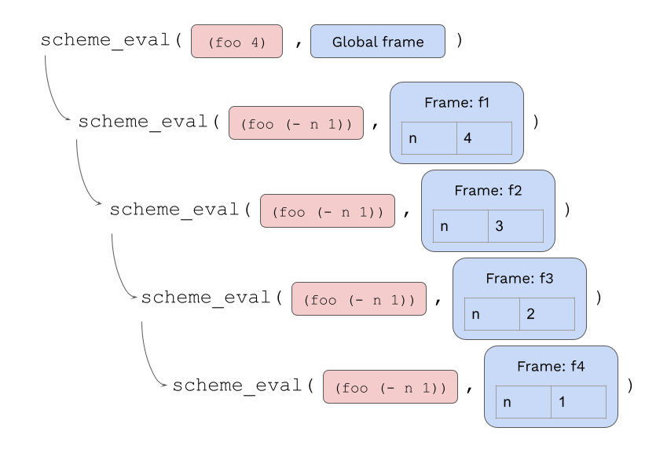
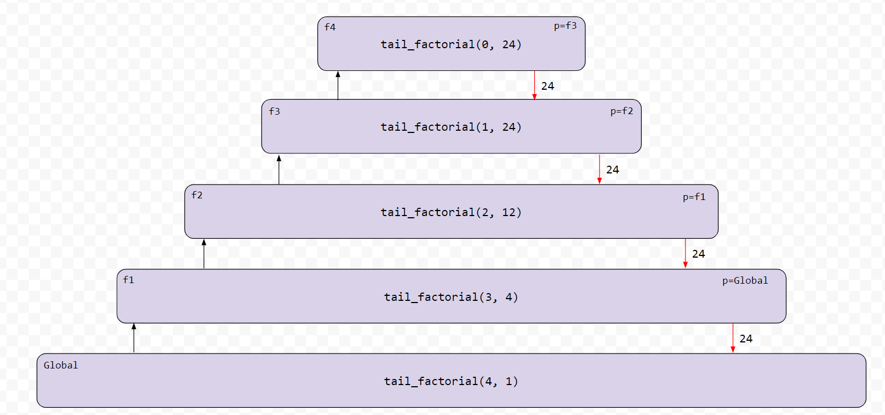
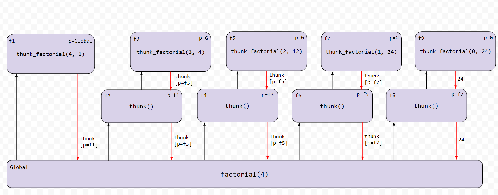
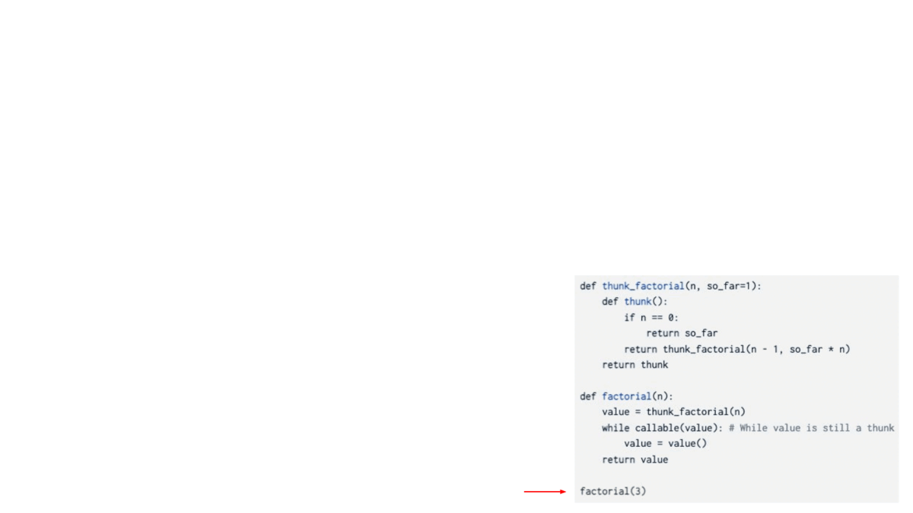
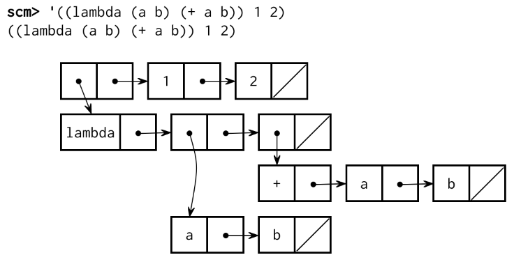

Project 4: Scheme Interpreter
Eval calls apply,
which just calls eval again!
When does it all end?

Introduction
Important submission note: For full credit,
- Submit with Parts 1 and 2 complete by Wednesday, July 31 (worth 1 pt).
- Submit with all phases complete by Tuesday, August 6. Try to attempt the problems in order, as some later problems will depend on earlier problems in their implementation and therefore also when running
oktests.The entire project can be completed with a partner.
You can get 1 EC point by submitting the entire project by Monday, August 5.
In this project, you will develop an interpreter for a subset of the Scheme language using Python. As you proceed, think about the issues that arise in the design of a programming language; many quirks of languages are byproducts of implementation decisions in interpreters and compilers. The subset of the language used in this project is described in the functional programming section of Composing Programs, as well as this language specification and built-in procedure reference.
You may find the lecture on Interpreters helpful for this project.
Download starter files
You can download all of the project code as a zip archive.
Files you will edit:
scheme_eval_apply.py: the recursive evaluator for Scheme expressionsscheme_forms.py: Python functions for evaluating special forms in Scheme (such asdefine,lambda,and,cond, etc.)scheme_classes.py: Python classes that describe Scheme expressionsquestions.scm: Scheme procedures for you to implement (similar to lab and homework questions)
The rest of the files in the project:
scheme.py: the interpreter REPL (aka the user interface to the interpreter)pair.py: defines thePairclass and thenilobjectscheme_builtins.py: built-in Scheme proceduresscheme_reader.py: the reader for Scheme inputscheme_tokens.py: the tokenizer for Scheme inputscheme_utils.py: functions for inspecting Scheme expressionsucb.py: utility functions for use in 61A projectstests.scm: a collection of test cases written in Schemeok: the autogradertests: a directory of tests used byokmytests.rst: a file where you can add your own tests
Logistics
The project is worth 31 points. 30 points are for correctness, 1 point is for submitting Parts 1 & 2 by the first checkpoint date.
You can get 1 EC point for submitting the entire project by Monday, August 5. You can get 4 additional EC points by completing the optional EC question.
You will turn in the following files:
scheme_eval_apply.pyscheme_forms.pyscheme_classes.pyquestions.scm
You do not need to modify or turn in any other files to complete the project. To submit the project, submit the required files to the appropriate Gradescope assignment.
For the functions that we ask you to complete, there may be some initial code that we provide. If you would rather not use that code, feel free to delete it and start from scratch. You may also add new function definitions as you see fit.
However, please do not modify any other functions or edit any files not listed above. Doing so may result in your code failing our autograder tests. Also, please do not change any function signatures (names, argument order, or number of arguments).
Throughout this project, you should be testing the correctness of your code. It is good practice to test often, so that it is easy to isolate any problems. However, you should not be testing too often, to allow yourself time to think through problems.
We have provided an autograder called ok to help you
with testing your code and tracking your progress. The first time you run the
autograder, you will be asked to log in with your Ok account using your web
browser. Please do so. Each time you run ok, it will back up
your work and progress on our servers.
The primary purpose of ok is to test your implementations.
If you want to test your code interactively, you can run
python3 ok -q [question number] -iwith the appropriate question number (e.g.
01) inserted.
This will run the tests for that question until the first one you failed,
then give you a chance to test the functions you wrote interactively.
You can also use the debugging print feature in OK by writing
print("DEBUG:", x)
which will produce an output in your terminal without causing OK tests to fail
with extra output.
Interpreter details
Scheme features
Read-Eval-Print. The interpreter reads Scheme expressions, evaluates them, and displays the results.
scm> 2
2
scm> (+ 2 3)
5
scm> ((lambda (x) (* x x)) 5)
25The starter code provided for the Scheme interpreter is enough to successfully evaluate the first expression above, since it consists of a single number. However, more complicated operations such as the second example (a call to a built-in procedure) and the third (a computation of 5 squared) will not work just yet.
Load. You can load a file by passing in a symbol for the file name.
For example, to load tests.scm, evaluate the following call expression.
scm> (load 'tests)Symbols. In the dialect of Scheme we use in CS 61A, a symbol (or
identifier) is a sequence of letters (a-z and A-Z), digits, and characters in
!$%&*/:<=>?@^_~-+. that do not form a valid integer or floating-point numeral.
Our version of Scheme is case-insensitive: two identifiers are considered identical if they differ only in the capitalization of letters. They are internally represented and printed in lower case:
scm> 'Hello
helloRunning the interpreter
To start an interactive Scheme interpreter session, type:
python3 scheme.pyTo exit the Scheme interpreter, press Ctrl-d on Mac/Linux (or Ctrl-z Enter on Windows) or evaluate the built-in exit procedure
(after completing problems 3 and 4, where calling built-in Scheme procedures is implemented):
scm> (exit)You can use your Scheme interpreter to evaluate the expressions in an input file
by passing the file name as a command-line argument to scheme.py:
python3 scheme.py tests.scmThe tests.scm file contains a long list of sample Scheme expressions and
their expected values. Many of these examples are from Chapters 1 and 2 of
Structure and Interpretation of Computer Programs, the textbook from
which Composing Programs is adapted.
Getting Started Videos
These videos may provide some helpful direction for tackling the coding problems on this assignment.
To see these videos, you should be logged into your berkeley.edu email.
Part 1: The Evaluator
In the starter implementation given to you, the interpreter can only evaluate
self-evaluating expressions: numbers, booleans, and nil.
In Part 1, you will develop the following features of the interpreter:
- Symbol definition and lookup
- Expression evaluation
- Calling built-in procedures (such as
+,exit,equal?, etc.; see the built-in procedure reference for the full list)
First, let's understand some relevant functions and classes.
Take a look at two important functions, scheme_eval and scheme_apply, in the "Eval/Apply" section of
scheme_eval_apply.py:
scheme_evalevaluates a Scheme expressionexprin the given environmentenv. This function is nearly complete but is missing the logic for call expressions.- Consider this
if-statement block inscheme_eval:
if scheme_symbolp(first) and first in scheme_forms.SPECIAL_FORMS:
return scheme_forms.SPECIAL_FORMS[first](rest, env)Notice that when evaluating a special form, scheme_eval redirects evaluation to an
appropriate do_?_form function found in scheme_forms.py. Some examples of special forms
are and, or, cond, if (note that these are not Built-In Procedures). We will work on
implementing do_?_form functions in a future part.
scheme_applyapplies a procedure to some arguments.
Now, take a look at the "Environments" and "Procedures" sections of scheme_classes.py:
- The
Frameclass represents an environment frame, much like the ones we work with in environment diagrams. - The
LambdaProcedureclass (in the "Procedures" section) represents user-defined procedures.
IMPORTANT NOTE: Since all non-atomic Scheme expressions (i.e., call expressions, special forms, definitions) are Scheme lists (and therefore linked lists), we use the
Pairclass to represent them. ThePairclass is similar to theLinkclass we've been working with. For example, the expression(+ 1 2)will be represented in our interpreter asPair('+', Pair(1, Pair(2, nil))). More complicated expressions can be represented with nestedPairs. For example, the expression(+ 1 (* 2 3))will be represented asPair('+', Pair(1, Pair(Pair('*', Pair(2, Pair(3, nil))), nil))). ThePairclass is defined inpair.py. Please take a look at this class before starting the project! Notice the similarities with theLinkclass.
Use Ok to test your understanding:
python3 ok -q eval_apply -uProblem 1 (1 pt)
Implement the define and lookup methods of the Frame class in scheme_classes.py.
Each Frame object has the following instance attributes:
bindingsis a dictionary representing the bindings in the frame instance. Each item associates a Scheme symbol (represented as a Python string) to a Scheme value.parentis the parentFrameinstance (parent environment frame). The parent of the Global Frame isNone.
To complete these methods:
definetakes a symbol (represented by a Python string) and a value. It binds the symbol to the value in theFrameinstance usingbindings.lookuptakes a symbol and returns the value bound to that symbol in the first frame of the environment where it is found. The environment for aFrameinstance consists of that frame, its parent frame, and all its ancestor frames, including the Global Frame. When looking up a symbol:- If the symbol is bound in the current frame, return its value.
- If the symbol is not bound in the current frame and the frame has a parent frame, look up the symbol in the parent frame.
- If the symbol is not found in the current frame and there is no parent frame,
raise a
SchemeError.
Use Ok to unlock and test your code:
python3 ok -q 01 -u
python3 ok -q 01>>> global_frame = create_global_frame()
>>> global_frame.define("x", 3)
>>> global_frame.parent is None
______
>>> global_frame.lookup("x")
______
>>> global_frame.define("x", 2)
>>> global_frame.lookup("x")
______
>>> global_frame.lookup("foo")
Choose the number of the correct choice:
0) SchemeError
1) 3
2) None
______>>> first_frame = create_global_frame()
>>> first_frame.define("x", 3)
>>> second_frame = Frame(first_frame)
>>> second_frame.parent == first_frame
______
>>> second_frame.define("y", False)
>>> second_frame.lookup("x")
______
>>> second_frame.lookup("y")
______
After you complete this problem, you can start your slightly improved Scheme interpreter
(with python3 scheme.py). You should now be able to look up built-in
procedure names:
scm> +
#[+]
scm> odd?
#[odd?]However, your Scheme interpreter will still not be able to call these procedures until you complete the next problem.
Remember, at this point, you can only exit the interpreter by pressing Ctrl-d on Max/Linux (or Ctrl-z Enter on Windows).
Problem 2 (2 pt)
To be able to call built-in procedures, such as +, you need to complete the
BuiltinProcedure case within the scheme_apply function in
scheme_eval_apply.py. Built-in procedures are applied by calling a
corresponding Python function that implements the procedure.
To see a list of all Scheme built-in procedures used in the project, look in the
scheme_builtins.pyfile. Any function decorated with@builtinwill be added to the globally-definedBUILTINSlist.
A BuiltinProcedure has two instance attributes:
py_func: the Python function that implements the built-in Scheme procedure.need_env: a Boolean that indicates whether or not this built-in procedure will need the current environment to be passed in as the last argument. The environment is required, for instance, to implement the built-inevalprocedure.
scheme_apply takes the procedure object, a list of argument values args, and
the current environment env.
args is a Scheme list, represented as a Pair object or nil,
containing the values passed to the procedure. For example, if the Scheme Built-In Procedure we
are trying to use is + and we pass in args as Pair(1, Pair(2, nil)) to scheme_apply,
we would be making the call (+ 1 2).
Your implementation should do the following:
- Convert the Scheme list to a Python list of arguments. Hint:
argsis aPair, which has.firstand.restattributes.- If
procedure.need_envisTrue, then add the current environmentenvas the last argument to this Python list.- Return the result of calling
procedure.py_funcon all of those arguments. Since you don't know the exact number of arguments, use*argsnotation:f(1, 2, 3)is equivalent tof(*[1, 2, 3]). Do this part within thetrystatement provided, after the line that saystry:.
We have already implemented the following behavior for you:
- If calling the function results in a
TypeErrorexception being raised, then the wrong number of arguments were passed. Thetrystatement handles this exception and raises aSchemeErrorwith the message'incorrect number of arguments'.
Use Ok to unlock and test your code:
python3 ok -q 02 -u
python3 ok -q 02>>> env = create_global_frame()
>>> twos = Pair(2, Pair(2, nil))
>>> plus = BuiltinProcedure(scheme_add) # + procedure
>>> scheme_apply(plus, twos, env) # Type SchemeError if you think this errors
______>>> env = create_global_frame()
>>> plus = BuiltinProcedure(scheme_add) # + procedure
>>> scheme_apply(plus, nil, env) # Remember what (+) evaluates to in scheme
______>>> env = create_global_frame()
>>> twos = Pair(2, Pair(2, nil))
>>> oddp = BuiltinProcedure(scheme_oddp) # odd? procedure
>>> scheme_apply(oddp, twos, env) # Type SchemeError if you think this errors
______
👩🏽💻👨🏿💻 Pair programming? Remember to alternate between driver and navigator roles. The driver controls the keyboard; the navigator watches, asks questions, and suggests ideas.
Problem 3 (2 pt)
The scheme_eval function (in scheme_eval_apply.py) evaluates a Scheme
expression in an environment. The provided code
already looks up symbols in the current environment, returns self-evaluating
expressions (such as numbers), and evaluates special forms.
Implement the missing part of scheme_eval, which evaluates a call expression.
To evaluate a call expression:
- Evaluate the operator (which should evaluate to a
Procedureinstance – seescheme_classes.pyforProceduredefinitions). - Evaluate all of the operands and collect the results (the argument values) in a Scheme list.
- Return the result of calling
scheme_applyon thisProcedureand these argument values.
You'll have to recursively call scheme_eval in the first two steps. Here are
some other functions/methods you should use:
- The
mapmethod ofPairreturns a new Scheme list constructed by applying a one-argument function to every item in a Scheme list. Think about what function we want to apply to every operand. - The
scheme_applyfunction applies a Scheme procedure to arguments represented as a Scheme list (aPairinstance ornil).
Important: do not mutate the passed-in
expr. That would change a program as it's being evaluated, creating strange and incorrect effects.
Use Ok to unlock and test your code:
python3 ok -q 03 -u
python3 ok -q 03>>> expr = read_line('(+ 2 2)')
>>> scheme_eval(expr, create_global_frame()) # Type SchemeError if you think this errors
______
>>> scheme_eval(Pair('+', Pair(2, Pair(2, nil))), create_global_frame()) # Type SchemeError if you think this errors
______
>>> expr = read_line('(+ (+ 2 2) (+ 1 3) (* 1 4))')
>>> scheme_eval(expr, create_global_frame()) # Type SchemeError if you think this errors
______
>>> expr = read_line('(yolo)')
>>> scheme_eval(expr, create_global_frame()) # Type SchemeError if you think this errors
______scm> (* (+ 3 2) (+ 1 7)) ; Type SchemeError if you think this errors
______
scm> (1 2) ; Type SchemeError if you think this errors
______
Some of these tests call a primitive (built-in) procedure called
print-then-return. This procedure doesn't exist in Scheme, but was added to this project just to test this question.print-then-returntakes two arguments. It prints out its first argument and returns the second. If you're interested, you can find this function at the bottom ofscheme_builtins.py
Your interpreter should now be able to evaluate built-in procedure calls, giving
you the functionality of the Calculator language and more. Run python3
scheme.py, and you can now add and multiply!
scm> (+ 1 2)
3
scm> (* 3 4 (- 5 2) 1)
36
scm> (odd? 31)
#tProblem 4 (2 pt)
The define special form (spec) in Scheme can be used either to assign the value of a given expression
to a symbol or to create a procedure and bind it to a symbol:
scm> (define a (+ 2 3)) ; Binds the symbol a to the value of expression (+ 2 3)
a
scm> (define (foo x) x) ; Creates a procedure and binds it to the symbol foo
fooNotice that the type of the first operand can tell us what is being defined:
- If it is a symbol, e.g.
a, then the expression is defining a symbol. - If it is a Scheme list, e.g.
(foo x), then the expression is creating a procedure.
The do_define_form function in scheme_forms.py evaluates (define ...)
expressions. There are two missing parts in this function; one for when the first
operand is a symbol, and the other for when it is a Scheme list (i.e. Pair).
For this problem, implement just the first part, which evaluates the second
operand to obtain a value and binds the first operand, a symbol, to that value. Then,
do_define_form returns the symbol that was bound.
Hint: The
definemethod of aFrameinstance creates a binding in that frame.
Use Ok to unlock and test your code:
python3 ok -q 04 -u
python3 ok -q 04What is the structure of the expressions argument to do_define_form?
Choose the number of the correct choice:
0) Pair(A, Pair(B, nil)), where:
A is the symbol being bound,
B is an expression whose value should be evaluated and bound to A
1) Pair(A, Pair(B, nil)), where:
A is the symbol being bound,
B is the value that should be bound to A
2) Pair('define', Pair(A, Pair(B, nil))), where:
A is the symbol being bound,
B is an expression whose value should be evaluated and bound to A
3) Pair(A, Pair(B, nil)), where:
A is the symbol being bound,
B is an expression whose value should be evaluated and bound to A
4) Pair(A, B), where:
A is the symbol being bound,
B is an expression whose value should be evaluated and bound to A
______What method of a Frame instance will binda value to a symbol in that frame?
Choose the number of the correct choice:
0) lookup
1) define
2) make_child_frame
3) bindings
______scm> (define size 2)
______
scm> size
______
scm> (define x (+ 7 3))
______
scm> x
______
You should now be able to assign values to symbols and evaluate those symbols.
scm> (define x 15)
x
scm> (define y (* 2 x))
y
scm> y
30The following ok test determines whether the operator of a call expression is
evaluated multiple times. The operator should be evaluated only a single time
before raising an error (because x is not bound to a procedure).
(define x 0)
; expect x
((define x (+ x 1)) 2)
; expect SchemeError
x
; expect 1If the operator is evaluated twice, then x will be bound to 2 instead of 1 at
the end, causing the test to fail. Therefore, if your code fails this test,
you'll want to make sure you only evaluate the operator of a call expression
once in scheme_eval.
Problem 5 (1 pt)
In Scheme, you can quote expressions in two ways: with the quote special form
(spec) or with the symbol '. The reader converts '... into
(quote ...), so that your interpreter only needs to evaluate the (quote ...)
syntax. The quote special form returns its operand expression without
evaluating it:
scm> (quote hello)
hello
scm> '(cons 1 2) ; Equivalent to (quote (cons 1 2))
(cons 1 2)Implement the do_quote_form function in scheme_forms.py so that it simply
returns the unevaluated operand of the (quote ...) expression. Hint: Do not overthink this.
Use Ok to unlock and test your code:
python3 ok -q 05 -u
python3 ok -q 05What is the structure of the expressions argument to do_quote_form?
Choose the number of the correct choice:
0) A, where:
A is the quoted expression
1) Pair(A, nil), where:
A is the quoted expression
2) [A], where:
A is the quoted expression
3) Pair('quote', Pair(A, nil)), where:
A is the quoted expression
______>>> global_frame = create_global_frame()
>>> do_quote_form(Pair(3, nil), global_frame)
______
>>> do_quote_form(Pair('hi', nil), global_frame)
______
>>> expr = Pair(Pair('+', Pair('x', Pair(2, nil))), nil)
>>> do_quote_form(expr, global_frame) # Make sure to use Pair notation
______
After completing this function, you should be able to evaluate quoted expressions. Try out some of the following in your interpreter!
scm> (quote a)
a
scm> (quote (1 2))
(1 2)
scm> (quote (1 (2 three (4 5))))
(1 (2 three (4 5)))
scm> (car (quote (a b)))
a
scm> 'hello
hello
scm> '(1 2)
(1 2)
scm> '(1 (2 three (4 5)))
(1 (2 three (4 5)))
scm> (car '(a b))
a
scm> (eval (cons 'car '('(1 2))))
1
scm> (eval (define tau 6.28))
6.28
scm> (eval 'tau)
6.28
scm> tau
6.28Check to make sure that you completed all the problems in Phase 1:
python3 ok --scorePart 2: Procedures
In Part 2, you will add the ability to create and call user-defined procedures. You will add the following features to the interpreter:
- Lambda procedures, using the
(lambda ...)special form - Named procedures, using the
(define (...) ...)special form - Dynamically scoped mu procedures, using the
(mu ...)special form.
Problem 6 (1 pt)
Change the eval_all function in scheme_eval_apply.py (which is called from
do_begin_form in scheme_forms.py) to complete the implementation of the
begin special form (spec).
A begin expression is evaluated by evaluating all sub-expressions in order.
The value of the begin expression is the value of the final sub-expression.
To complete the implementation of begin, eval_all will take in expressions
(a Scheme list of expressions) and env (a Frame representing the current
environment), evaluate all the expressions in expressions, and return the
value of the last expression in expressions.
scm> (begin (+ 2 3) (+ 5 6))
11
scm> (define x (begin (display 3) (newline) (+ 2 3)))
3
x
scm> (+ x 3)
8
scm> (begin (print 3) '(+ 2 3))
3
(+ 2 3)If eval_all is passed an empty list of expressions (nil), then it should
return the Python value None, which represents the Scheme value undefined.
Use Ok to unlock and test your code:
python3 ok -q 06 -u
python3 ok -q 06>>> env = create_global_frame()
>>> eval_all(Pair(2, nil), env)
Choose the number of the correct choice:
0) 2
1) SchemeError
______>>> eval_all(Pair(4, Pair(5, nil)), env)
Choose the number of the correct choice:
0) (4 5)
1) 5
2) 4
3) SchemeError
______scm> (begin (+ 2 3) (+ 5 6))
______
scm> (begin (define x 3) x)
______scm> (begin 30 '(+ 2 2))
Choose the number of the correct choice:
0) 30
1) 4
2) '(+ 2 2)
3) (+ 2 2)
______
scm> (define x 0)
______
scm> (begin (define x (+ x 1)) 42 (define y (+ x 1)))
______
scm> x
______
scm> y
______
👩🏽💻👨🏿💻 Pair programming? This would be a good time to switch roles. Switching roles makes sure that you both benefit from the learning experience of being in each role.
User-Defined Procedures
User-defined lambda procedures are represented as instances of the LambdaProcedure
class. A LambdaProcedure instance has three instance attributes:
formals: a Scheme list containing the formal parameter names for the arguments of the lambda procedure.body: a nested Scheme list of expressions representing the body of the procedure.env: the environment in which the procedure was defined.
For example, in (lambda (x y) (+ x y)), formals is Pair('x', Pair('y', nil)).
body is Pair(Pair('+', Pair('x', Pair('y', nil))), nil), which is a nested Scheme list where the
first element (body.first) is the expression (+ x y) represented as Pair('+', Pair('x', Pair('y', nil))). body is nested
to allow for complex expressions and nested function calls.
Problem 7 (2 pt)
Implement the do_lambda_form function (spec) in
scheme_forms.py, which creates and returns a LambdaProcedure instance.
In Scheme, the body of a procedure can contain multiple expressions, but must include at least one.
The body attribute of a LambdaProcedure instance is a nested Scheme list of these expressions,
and the formals attribute is a properly nested Pair expression (see User-Defined Procedures for an example).
Like a begin special form, evaluating the body of a procedure executes all expressions in order,
with the return value being the result of the last expression.
Use Ok to unlock and test your code:
python3 ok -q 07 -u
python3 ok -q 07scm> (lambda (x y) (+ x y)) ;; An lambda procedure is displayed exactly as it is written
______
scm> (lambda (x)) ; type SchemeError if you think this causes an error
______>>> env = create_global_frame()
>>> lambda_line = read_line("(lambda (a b c) (+ a b c))")
>>> lambda_proc = do_lambda_form(lambda_line.rest, env)
>>> lambda_proc.formals # use single quotes ' around strings in your answer
Choose the number of the correct choice:
0) Pair('a', Pair('b', Pair('c', nil)))
1) Pair('+', Pair('a', Pair('b', Pair('c', nil))))
2) Pair(Pair('a', Pair('b', Pair('c', nil))))
______
>>> lambda_proc.body # the body is a *Scheme list* of expressions! Make sure your answer is a properly nested Pair.
Choose the number of the correct choice:
0) Pair('+', 'a', 'b', 'c')
1) Pair('a', Pair('b', Pair('c')))
2) Pair(Pair('+', Pair('a', Pair('b', Pair('c', nil)))), nil)
3) Pair('+', Pair('a', Pair('b', Pair('c', nil))))
______
While you cannot call a user-defined procedure yet, you can visually verify that you have created the procedure correctly by evaluating a lambda expression in your interpreter.
scm> (lambda (x y) (+ x y))
(lambda (x y) (+ x y))Problem 8 (2 pt)
Implement the make_child_frame method of the Frame class
(in scheme_classes.py), which will be used to create new frames when calling
user-defined procedures. This method takes in two arguments: formals, which is
a Scheme list of symbols (ex: Pair('x', Pair('y', nil))), and vals, which is a
Scheme list of values (ex: Pair(3, Pair(5, nil))). It should return a new child frame
with the formal parameters bound to the values.
To do this:
- If the number of argument values does not match with the number of formal parameters, raise a
SchemeError. - Create a new
Frameinstance, the parent of which isself. - Bind each formal parameter to its corresponding value in the newly
created frame. The first symbol in
formalsshould be bound to the first value invals, and so on. Remember thatformalsandvalsarePairs. - Return the new frame.
Hint: The
definemethod of aFrameinstance creates a binding in that frame.
Use Ok to unlock and test your code:
python3 ok -q 08 -u
python3 ok -q 08>>> global_frame = create_global_frame()
>>> formals = Pair('a', Pair('b', Pair('c', nil)))
>>> vals = Pair(1, Pair(2, Pair(3, nil)))
>>> frame = global_frame.make_child_frame(formals, vals)
>>> global_frame.lookup('a') # Type SchemeError if you think this errors
______
>>> frame.lookup('a') # Type SchemeError if you think this errors
______
>>> frame.lookup('b') # Type SchemeError if you think this errors
______
>>> frame.lookup('c') # Type SchemeError if you think this errors
______>>> global_frame = create_global_frame()
>>> frame = global_frame.make_child_frame(nil, nil)
>>> frame.parent is global_frame
______
Problem 9 (2 pt)
Implement the LambdaProcedure case in the scheme_apply function
in scheme_eval_apply.py. Notice that this elif block is executed when the
procedure being applied is a LambdaProcedure instance.
First create a new Frame instance and bind the procedure's formal parameters to
the argument values by calling the make_child_frame method on the appropriate parent frame.
Then, within this new frame, evaluate each of the expressions of the body of the procedure
using eval_all.
Hint: Your new frame should be a child of the frame in which the lambda is defined. Note that the
envprovided as an argument toscheme_applyis instead the frame in which the procedure is called.Hint: In
scheme_apply, what variable represents the arguments being passed into the procedure? Refer to Problem 2 if you need a refresher.See User-Defined Procedures to remind yourself of the attributes of
LambdaProcedure.
Use Ok to unlock and test your code:
python3 ok -q 09 -u
python3 ok -q 09scm> (define x 5)
______
scm> (define outer (lambda (x)
.... (lambda () (print x))))
______
scm> (define inner (outer 2))
______
scm> (inner) ;; which x is accessed? which frame is the parent?
______>>> global_frame = create_global_frame()
>>> frame = global_frame.make_child_frame(nil, nil)
>>> frame.parent is global_frame
______
Problem 10 (2 pt)
Currently, your Scheme interpreter is able to bind symbols to user-defined procedures in the following manner:
scm> (define f (lambda (x) (* x 2)))
fbecause binding a symbol to an expression was implemented in Problem 4, and user-defined procedures was implemented in Problem 9.
However, we'd like to be able to use the shorthand form of defining named procedures, which is what we've been doing in homeworks and labs:
scm> (define (f x) (* x 2))
fCan you see the difference between the two?
Modify the do_define_form function in scheme_forms.py so that it correctly handles
define (...) ...) expressions (spec).
Make sure that it can handle multi-expression bodies. For example,
scm> (define (g y) (print y) (+ y 1))
g
scm> (g 3)
3
4There are (at least) two ways to solve this problem. One is to construct an expression (define _ (lambda ...)) and call do_define_form on it (omitting the define). The second is to implement it directly:
- Using the given variables
signatureandexpressions, find the defined function's name (symbol), formals, and body. - Create a
LambdaProcedureinstance using the formals and body. (You could calldo_lambda_formto do this.) - Bind the symbol to this new
LambdaProcedureinstance. - Return the symbol that was bound.
Doctest Walkthrough: Consider the doctest
do_define_form(read_line(“((f x) (+ x 2))“), env). This is the Python call that will evaluate(define (f x) (+ x 8))in Scheme.read_lineis a utility function that takes in “((f x) (+ x 2))” and returns itsPairrepresentation. Therefore, thatPairrepresentation is passed intodo_define_formas itsexpressionsparameter.Hint for Way 2: How can we utilize the Scheme list representation of
((f x) (+ x 2))(the structure for(define (f x) (* x 2))) to have the same functionality as(define f (lambda (x) (+ x 2))), which we know our Scheme interpreter (and thus our Python code) can already handle? Try writing out the Scheme list representation yourself and consider what components you would need to extract from it in order to be able to replicate the functionality of(define f (lambda (x) (+ x 2)))in Python withindo_define_form.
Use Ok to unlock and test your code:
python3 ok -q 10 -u
python3 ok -q 10scm> (define (f x y) (+ x y))
______
scm> f
Choose the number of the correct choice:
0) (lambda (x y) (+ x y))
1) (lambda (f x y) (+ x y))
2) (define f (lambda (x y) (+ x y)))
3) (f (x y) (+ x y))
______Problem 11 (2 pt)
All of the Scheme procedures we've seen so far use lexical scoping: the parent of the new call frame is the environment in which the procedure was defined. Another type of scoping, which is not standard in Scheme but appears in other variants of Lisp, is called dynamic scoping: the parent of the new call frame is the environment in which the call expression was evaluated. With dynamic scoping, calling the same procedure with the same arguments from different parts of your code can create different behavior (due to different parent frames).
The mu special form (spec; invented for this project) evaluates
to a dynamically scoped procedure.
scm> (define f (mu () (* a b)))
f
scm> (define g (lambda () (define a 4) (define b 5) (f)))
g
scm> (g)
20Above, the procedure f does not have a or b as arguments; however, because
f gets called within the procedure g, it has access to the a and b
defined in g's frame.
Your job:
- Implement
do_mu_forminscheme_forms.pyto evaluate themuspecial form. Amuexpression evaluates to aMuProcedure. TheMuProcedureclass (defined inscheme_classes.py) has been provided for you. - In addition to implementing
do_mu_form, complete theMuProcedurecase within thescheme_applyfunction (inscheme_eval_apply.py) so that when a mu procedure is called, its body is evaluated in the correct environment. When aMuProcedureis called, the parent of the new call frame is the environment in which that call expression was evaluated. As a result, aMuProceduredoes not need to store an environment as an instance attribute. Your code here should be VERY similar to what you did for question 9.
Use Ok to unlock and test your code:
python3 ok -q 11 -u
python3 ok -q 11scm> (define y 1)
______
scm> (define f (mu (x) (+ x y)))
______
scm> (define g (lambda (x y) (f (+ x x))))
______
scm> (g 3 7)
______At this point in the project, your Scheme interpreter should support the following features:
- Creating procedures using
lambdaandmuexpressions, - Defining named procedures using
defineexpressions, and - Calling user-defined procedures.
Submit your Phase 1 & 2 checkpoint
Check to make sure that you completed all the problems in Phase 1 and 2:
python3 ok --scoreThen, submit scheme_eval_apply.py, scheme_forms.py, scheme_classes.py, and questions.scm to the Scheme Checkpoint assignment on Gradescope before the checkpoint deadline.
When you run ok commands, you'll still see that some tests are locked
because you haven't completed the whole project yet. You'll get full credit for
the checkpoint if you complete all the problems up to this point.
Part 3: Special Forms
This section will be completed in scheme_forms.py.
Logical special forms include if, and, or, and cond. These expressions
are special because not all of their sub-expressions may be evaluated.
In Scheme, only #f is a false value. All other values
(including 0 and nil) are true values. You can test whether a value is a
true or false value using the provided Python functions is_scheme_true and
is_scheme_false, defined in scheme_utils.py.
Scheme traditionally uses
#fto indicate the false Boolean value. In our interpreter, that is equivalent tofalseorFalse. Similarly,true,True, and#tare all equivalent. However, when unlocking tests, use#tand#f.
To get you started, we've provided an implementation of the if special form in
the do_if_form function. Make sure you understand that implementation before
starting the following questions.
Problem 12 (2 pt)
Implement do_and_form and do_or_form so that and and or expressions
(spec) are evaluated correctly.
The logical forms and and or are short-circuiting. For and, your
interpreter should evaluate each sub-expression from left to right, and if any
of these is a false value, return that value. Otherwise,
return the value of the last sub-expression. If there are no
sub-expressions in an and expression, it evaluates to #t.
scm> (and)
#t
scm> (and 4 5 6) ; all operands are true values
6
scm> (and 4 5 (+ 3 3))
6
scm> (and #t #f 42 (/ 1 0)) ; short-circuiting behavior of and
#fIn your code here, you should represent Scheme's
#tas Python'sTrueand Scheme's#fas Python'sFalse.
For or, evaluate each sub-expression from left to right. If any
sub-expression evaluates to a true value, return that value. Otherwise, return
the value of the last sub-expression.
If there are no sub-expressions in an or expression,
it evaluates to #f.
scm> (or)
#f
scm> (or 5 2 1) ; 5 is a true value
5
scm> (or #f (- 1 1) 1) ; 0 is a true value in Scheme
0
scm> (or 4 #t (/ 1 0)) ; short-circuiting behavior of or
4Important: Use the provided Python functions is_scheme_true and
is_scheme_false from scheme_utils.py to test boolean values.
Use Ok to unlock and test your code:
python3 ok -q 12 -u
python3 ok -q 12scm> (and)
Choose the number of the correct choice:
0) #t
1) #f
2) SchemeError
______
scm> (and 1 #f)
Choose the number of the correct choice:
0) 1
1) #t
2) #f
______
scm> (and (+ 1 1) 1)
______
scm> (and #f 5)
______
scm> (and 4 5 (+ 3 3))
______
scm> (not (and #t #f 42 (/ 1 0)))
______scm> (or)
Choose the number of the correct choice:
1) #t
0) #f
2) SchemeError
______
scm> (or (+ 1 1))
Choose the number of the correct choice:
0) 2
1) #f
2) #t
______
scm> (not (or #f))
______
scm> (define (zero) 0)
______
scm> (or (zero) 3)
______
scm> (or 4 #t (/ 1 0))
______
Problem 13 (2 pt)
Fill in the missing parts of do_cond_form so that it correctly implements
cond (spec), returning the value of the first result
sub-expression corresponding to a true predicate, or the value of the result
sub-expression corresponding to else.
Some special cases:
- When the true predicate does not have a corresponding result sub-expression, return the predicate value.
- When a result sub-expression of a
condcase has multiple expressions, evaluate them all and return the value of the last expression. (Hint: Useeval_all.)
Your implementation should match the following examples and the additional tests
in tests.scm.
scm> (cond ((= 4 3) 'nope)
((= 4 4) 'hi)
(else 'wait))
hi
scm> (cond ((= 4 3) 'wat)
((= 4 4))
(else 'hm))
#t
scm> (cond ((= 4 4) 'here (+ 40 2))
(else 'wat 0))
42The value of a cond is undefined if there are no true predicates and no
else. In such a case, do_cond_form should return None. If there is only an
else, return the value of its result sub-expression. If it doesn't have one,
return #t.
scm> (cond (False 1) (False 2))
scm> (cond (else))
#tUse Ok to unlock and test your code:
python3 ok -q 13 -u
python3 ok -q 13scm> (cond ((> 2 3) 5)
.... ((> 2 4) 6)
.... ((< 2 5) 7)
.... (else 8))
______
scm> (cond ((> 2 3) 5)
.... ((> 2 4) 6)
.... (else 8))
______
scm> (cond ((= 1 1))
.... ((= 4 4) 'huh)
.... (else 'no))
______
scm> (cond ((and #f 2) 'whats)
.... ((and 1 #t 2))
.... ((> 2 3) 'going)
.... (else 'on))
______Problem 14 (2 pt)
The let special form (spec) binds symbols to values locally,
giving them their initial values. For example:
scm> (define x 5)
x
scm> (define y 'bye)
y
scm> (let ((x 42)
(y (* x 10))) ; this x refers to the global value of x, not 42
(list x y))
(42 50)
scm> (list x y)
(5 bye)Implement make_let_frame in scheme_forms.py, which returns a child
frame of env that binds the symbol in each element of bindings to the
value of its corresponding expression. The bindings Scheme list contains
pairs that each contain a symbol and a corresponding expression.
You may find the following functions and methods useful:
validate_form: this function can be used to validate the structure of each binding. It takes in a Scheme listexprof expressions and aminandmaxlength. Ifexpris not a list with length betweenminandmaxinclusive, it raises an error. If nomaxis passed in, the default is infinity.validate_formals: this function validates that its argument is a Scheme list of symbols for which each symbol is distinct.
Hint: When building new linked lists iteratively, it may be easier to build it from right to left (or end to start).
Remember to refer to the spec if you don't understand any of the test cases!
Use Ok to unlock and test your code:
python3 ok -q 14 -u
python3 ok -q 14scm> (define x 1)
______
scm> (let ((x 5))
.... (+ x 3))
______
scm> x
______scm> (let ((a 1) (b a)) b)
Choose the number of the correct choice:
0) x
1) y
2) 1
3) SchemeError
______scm> (let ((x 5))
.... (let ((x 2)
.... (y x))
.... (+ y (* x 2))))
______scm> (let ((a 2) (a 3)) (+ a a)) ; how should we catch something like this?
______
scm> (let ((y 2 3)) (+ y y)) ; should this be an allowable form?
______
Additional Scheme Tests (1 pt)
Your final task in Part III of this project is to make sure that your scheme interpreter passes the additional suite of tests we have provided.
To run these tests (worth 1 point), run the command:
python3 ok -q tests.scmIf you have passed all of the required cases,
you should see 1/1 points
received for tests.scm when you run python ok --score.
If you are failing tests due to output from
print statements you've added in your code for debugging,
make sure to remove those as well for the tests to pass.
Congratulations! Your Scheme interpreter implementation is now complete!
Part 4: Write Some Scheme
Not only is your Scheme interpreter itself a tree-recursive program, but it is
flexible enough to evaluate other recursive programs. Implement the
following procedures in the questions.scm file.
See the built-in procedure reference for descriptions of the behavior of all built-in Scheme procedures.
As you use your interpreter, you may discover additional bugs in your interpreter implementation. Therefore, you may find it useful to test your code for these questions in the staff interpreter or the web editor and then try it in your own interpreter once you are confident your Scheme code is working. You can also use the web editor to visualize the scheme code you've written and help you debug.
Scheme Editor
As you're writing your code, you can debug using the local Scheme Editor.
To run this editor, run python3 editor. This should open a window in your
browser; if it does not, please navigate to localhost:31415
and you should see it.
Make sure to run python3 ok in a separate tab or window so that the editor
keeps running.
👩🏽💻👨🏿💻 Pair programming? Remember to alternate between driver and navigator roles. The driver controls the keyboard; the navigator watches, asks questions, and suggests ideas.
Problem 15 (2 pt)
Implement the enumerate procedure, which takes in a list of values and returns
a list of two-element lists, where the first element is the index of the value,
and the second element is the value itself.
scm> (enumerate '(3 4 5 6))
((0 3) (1 4) (2 5) (3 6))
scm> (enumerate '())
()Use Ok to test your code:
python3 ok -q 15Problem 16 (2 pt)
Implement the merge procedure, which takes in a comparator function ordered?
and two lists that are sorted according to the comparator and combines the two
lists into a single sorted list. A comparator defines an ordering by comparing
two values and returning a true value if and only if the two values are ordered.
scm> (merge < '(1 4 6) '(2 5 8))
(1 2 4 5 6 8)
scm> (merge > '(6 4 1) '(8 5 2))
(8 6 5 4 2 1)
scm> (merge < '(1) '(2 3 5))
(1 2 3 5)In case of a tie, you can choose to break the tie in any way you wish.
Use Ok to test your code:
python3 ok -q 16Extra Credit
During Office Hours and Project Parties, the staff will prioritize helping students with required questions. We will not be offering help with this question unless the queue is empty.
In these series of problems, you will implement tail-call optimization, an essential feature of the Scheme language. Watch this playlist to learn about tail calls.
We will implement tail-call optimization in Scheme by using a technique called "trampolining"
to tail-call optimize our scheme_eval function in Python.
First, let's begin with why optimizing the scheme_eval function will optimize the Scheme interpreter.
scheme_eval, a tree recursive function. Therefore, when we
make an initial call to scheme_eval, a very large of recursive calls to scheme_eval are subsequently made.
For example, consider the simple procedure:
(define (foo n)
(if (= n 0)
0
(foo (- n 1))))Evaluating (foo 4) in our Scheme interpreter results in scheme_eval being called 52 times.
If we visualize the call of scheme_eval on the expression (foo 4), we see an interesting pattern:

The structure of recursive calls made by scheme_eval closely mirrors the structure of recursive calls made by foo:
- The call to
scheme_evalthat calculates(foo 4)eventually makes a recursive call toscheme_evalthat calculates(foo 3). The call toscheme_evalthat calculates(foo 3)eventually makes a recursive call toscheme_evalthat calculates(foo 2), and so on. - In the
foofunction in Scheme, the very last action in the call to(foo 4)is a recursive call to(foo 3). Similarly, in Python, the very last action in thescheme_evalcall for(foo 4)is a recursive call toscheme_evalfor(foo 3). In other words, thesescheme_evalcalls are tail calls!
In Python, a large number of scheme_eval frames are opened and kept. Each of these scheme_eval frames holds a
reference to a foo frame from the previous call (represented by an instance of the Frame class) through the env parameter. Because our current interpreter implementation keeps the scheme_eval frames open to return to once everything is evaluated, it also keeps all these unnecessary foo frames open.
However, because some of the scheme_eval calls are tail calls, we actually don't need to keep all of those scheme_eval frames that are being
created in Python. By tail-call optimizing scheme_eval, we can eliminate these unnecessary frames. And since the Scheme frames are
stored within the scheme_eval call frames, tail-call optimizing scheme_eval in Python will automatically tail-call optimize the entire
interpreter in Scheme (yay!).
As it turns out, tail-call optimizing scheme_eval has other effects in addition to tail-call optimizing Scheme.
For example, expressions like (or #f (or #f (or #f f ))) also become much more efficient to run (which we will explores in one of the subparts).
foo, that doesn't do very much.
(define (foo n)
(if (= n 0)
0
(foo (- n 1))))In your non-tail-call optimized version of Scheme, here's what happens when call we foo(4):
In order to calculate (foo 4), we need to call (foo 3). In order to calculate (foo 3),
we need to call (foo 2). In order to calculate (foo 2), we need to call (foo 1). In order
to calculate (foo 1), we need to call (foo 0), which returns 0.
While all of these recursive calls are happening, each call waits on the result of the next recursive
call, and its frame remains open during that time. This is manageable for small inputs, but for (foo 1000000),
over 1 million frames will be simultaneously open at some point! That could crash your computer.
In most circumstances, this practice of keeping these frames active during subsequent procedure calls is important.
For example, in the below code, the procedure f calls g. The frame of f needs to remain active while the call
to g is ongoing, so that we can eventually return to f and complete its execution using the result from g.
(define (f x)
(define y (g x))
(* x y))
(define (g x)
(* 6 x))
(f 7)However, some procedures, such as foo, make their procedure calls only at the very very end.
Because the very last thing (foo 4) does is make a call to (foo 3), there will be nothing left to do
in the (foo 4) call after (foo 3) returns.
Therefore, we do not need to actually keep around the (foo 4) frame once we have made the recursive call to (foo 3).
Our interpreter is currently saving these frames, even though they are redundant. If we could get rid of these frames
when we are done with them, we would solve the issue of large inputs to foo crashing and dramatically improve the efficiency
of our program.
In the situation where a call is the last thing a procedure evaluates before it returns, that call is said to be in a tail context. Full implementations of Scheme all implement tail-call optimization, which involves discarding unnecessary frames so that tail calls run more efficiently.
The basic unit of this method is the Thunk, which represents an unevaluated operation. The easiest way to create a Thunk and simulate an unevaluated operation is by wrapping the operation in a zero-argument function and saving it for later evaluation.
>>> my_thunk1 = lambda: sqrt(16384) + 22
>>> my_thunk2 = lambda: some_costly_operation(1000)In the first Thunk, we wrap the operation sqrt(16384) + 22 in a zero-argument lambda function and save it to the variable my_thunk1.
In the second Thunk, we wrap some_costly_operation(1000) in a zero-argument lambda function and save it to the variable my_thunk2.
These Thunks can be "unwrapped" later by calling the variable where the zero-argument function was saved, which will then evaluate the operation inside.
>>> my_thunk1()
150.0
>>> my_thunk2()
# result of evaluating some_costly_operation(1000)Thunks can be nested as well, which will require multiple calls to unwrap:
>>> my_nested_thunk = lambda: lambda: lambda: 4 * (2 + 3)
>>> thunk2 = my_nested_thunk()
>>> thunk3 = thunk2()
>>> result = thunk3()
>>> result
20This "unwrapping" of a nested thunk can be done automatically by repeatedly calling the thunk until it finally returns a value. This is the process we call trampolining.
def trampoline(value):
while callable(value): # While value is still a thunk
value = value()
return valueWhy is this useful? Consider our Python tail-call-optimized factorial:
def tail_factorial(n, so_far=1):
if n == 0:
return so_far
return tail_factorial(n - 1, so_far * n)While the Scheme version of tail_factorial would be tail-call-optimized, recall that Python does not optimize tail calls.
In this Python version of tail_factorial, a frame is opened at each recursive call and only closed at the very end, causing
this to be as inefficient as the original factorial implementation in Python without tail calls! Visualizing this as a call stack:

Observe that by the time we get to the base case, every single tail_factorial frame is still open.
To fix this, we can apply thunking!
The implementation looks like this:
def thunk_factorial(n, so_far=1):
def thunk():
if n == 0:
return so_far
return thunk_factorial(n - 1, so_far * n)
return thunk
def factorial(n):
value = thunk_factorial(n)
while callable(value): # While value is still a thunk
value = value()
return valueThunking keeps only one thunk_factorial frame open by having each call evaluate exactly one step of the factorial. Instead of making and returning another nested call (like in tail_factorial with return tail_factorial(n - 1, so_far * n)), thunk_factorial returns an unevaluated thunk. Think about how the mutual recursion in thunk_factorial achieves this!
Now, with factorial, we apply trampolining and unravel thunk_factorial until we get the final answer.
With these 2 functions, we no longer keep every frame at each recursive call open!
To visualize the benefit, consider the new diagram of the function calls, and compare to the original tail recursive version:

While the thunked version may initially seem more complicated, notice that there are always at most
one thunk_factorial and thunk calls active at a time. This is true no matter how large n gets!
At each step, calling the current thunk calculates exactly one step of the factorial, then returns
a new thunk for the next step so that the process can continue in the next loop.
You can also take a closer look by observing this step-by-step diagram that walks through
evaluating the first part of factorial(3):

Notice that by returning an unevaluated thunk from thunk_factorial instead of making a recursive call,
completed frames can close rather than stay open waiting for the recursive call they made to return. This way,
only the necessary frames remain open at any given time.
For our Scheme interpreter, an Unevaluated instance is a thunk of scheme_eval, the function we want to optimize.
We repeatedly evaluate this thunk by calling scheme_eval on the stored arguments, until we get a value
(which we return).
Problem EC (4 pts)
Preface: This question is challenging and requires you to modify multiple areas in the interpreter without specifying where. We recommend taking the time to thoroughly understand all the concepts and develop a clear strategy before beginning to code.
Important: While working, continuously ensure that the code you write for this question does not cause other parts of the project to fail. If you find yourself losing track of your edits, it might be a good idea to save a copy of your original code for reference.
Complete the function optimize_tail_calls in scheme_eval_apply.py. It returns an
alternative to scheme_eval that is tail-call optimized in Python. That is, it will
allow an unbounded number of active tail calls to scheme_eval in constant
space. It has a third argument tail that indicates whether the call to scheme_eval is
a tail call or not.
The Unevaluated class represents an expression that needs to be evaluated in a specific environment.
When optimized_eval receives a non-atomic expression in a tail context, it returns an instance of Unevaluated.
Otherwise, optimized_eval should keep calling unoptimized_scheme_eval on the current expr and env until the
result is a final value, rather than an Unevaluated instance.
After you are done implementing optimize_tail_calls, uncomment the following line in scheme_eval_apply.py
to reassign the original scheme_eval to the optimized implementation:
scheme_eval = optimize_tail_calls(scheme_eval)Finally, identify which calls to scheme_eval in your interpreter are tail calls. Modify those scheme_eval tail calls to pass in True
as the third argument (the tail parameter) whenever applicable.
Note: A successful implementation will require changes to several other functions, including some functions that we provided for you.
Hints:
A call to
scheme_evalis a tail call if it is the last thing to be done in a function before it returns.Even within a function, not every call to
scheme_evalwill benefit from tail-call optimization. Consider which specific calls will benefit and pass True for thetailargument accordingly.
Use Ok to test your code:
python3 ok -q ECOptional Problem (0 pt)
In Scheme, source code is data. Every non-atomic expression is written as a Scheme list, so we can write procedures that manipulate other programs just as we write procedures that manipulate lists.
Rewriting programs can be useful: we can write an interpreter that only handles a small core of the language, and then write a procedure that converts other special forms into the core language before a program is passed to the interpreter.
For example, the let special form is equivalent to a call expression that begins with a lambda expression. Both create a new frame extending the current environment and evaluate a body within that new environment.
(let ((a 1) (b 2)) (+ a b))
;; Is equivalent to:
((lambda (a b) (+ a b)) 1 2)These expressions can be represented by the following diagrams:
| Let | Lambda |
|---|---|
 |
 |
Use this rule to implement a procedure called let-to-lambda in questions.scm that rewrites all let special forms into lambda expressions. If we quote a let expression and pass it into this procedure, an equivalent lambda expression should be returned:
scm> (let-to-lambda '(let ((a 1) (b 2)) (+ a b)))
((lambda (a b) (+ a b)) 1 2)
scm> (let-to-lambda '(let ((a 1)) (let ((b a)) b)))
((lambda (a) ((lambda (b) b) a)) 1)
scm> (let-to-lambda 1)
1
scm> (let-to-lambda 'a)
aIn order to handle all programs, let-to-lambda must be aware of Scheme syntax. Since Scheme expressions are recursively nested, let-to-lambda must also be recursive. In fact, the structure of let-to-lambda is somewhat similar to that of scheme_eval—but in Scheme! As a reminder, atoms include numbers, booleans, nil, and symbols. You do not need to consider code that contains quasiquotation for this problem.
(define (let-to-lambda expr)
(cond ((atom? expr) <rewrite atoms>)
((quoted? expr) <rewrite quoted expressions>)
((lambda? expr) <rewrite lambda expressions>)
((define? expr) <rewrite define expressions>)
((let? expr) <rewrite let expressions>)
(else <rewrite other expressions>)))Hint 1: Consider how you can use map to convert let forms in every element of a list to the equivalent lambda form? Consider using zip:
scm> (zip '((1 2) (3 4) (5 6)))
((1 3 5) (2 4 6))
scm> (zip '((1 2)))
((1) (2))
scm> (zip '())
(() ())Hint 2: In this problem, it may be helpful to build a Scheme list that evaluates to a special form (for instance, a lambda expression). As a related example, the following code builds a scheme list that evaluates to the expression (define (f x) (+ x 1)):
(let ((name-and-params '(f x))
(body '(+ x 1)))
(cons 'define
(cons name-and-params (cons body nil))))Use Ok to test your code:
python3 ok -q optionalWe used let while defining
let-to-lambda. What if we want to runlet-to-lambdaon an interpreter that does not recognizelet? We can passlet-to-lambdato itself to rewrite itself into an equivalent program withoutlet:;; The let-to-lambda procedure (define (let-to-lambda expr) ...) ;; A list representing the let-to-lambda procedure (define let-to-lambda-code '(define (let-to-lambda expr) ...)) ;; A let-to-lambda procedure that does not use 'let'! (define let-to-lambda-without-let (let-to-lambda let-to-lambda-code))
Conclusion
Congratulations! You have just implemented an interpreter for an entire language! If you enjoyed this project and want to extend it further, you may be interested in looking at more advanced features, like let* and letrec, unquote splicing, error tracing, and continuations.
Project Submission
Run ok on all problems to make sure all tests are unlocked and pass:
python3 okYou can also check your score on each part of the project:
python3 ok --scoreOnce you are satisfied, submit scheme_eval_apply.py, scheme_forms.py, scheme_classes.py, and questions.scm to the Scheme assignment on Gradescope before the second checkpoint deadline.
You can add a partner to your Gradescope submission by clicking on + Add Group Member under your name on the right hand side of your submission. Only one partner needs to submit to Gradescope.